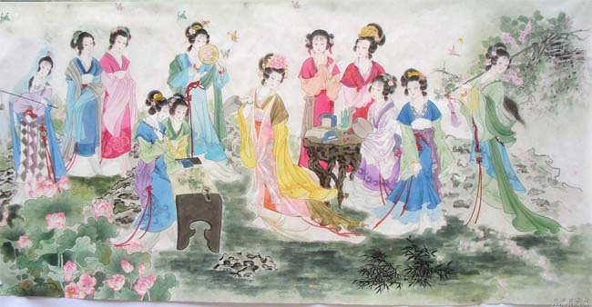

|  |
陵十二钗出自中国名著《红楼梦》 (又名《石头记》、《金玉缘》),是《红楼梦》里太虚幻境“薄命司”里记录的南京十二个最优秀的女子。 林如海与贾敏的独女。因父母先后去世，外祖母怜其孤独，接来荣国府抚养。虽然她是寄人篱下的孤儿，但她生性孤傲，天真率直，和宝玉同为封建的叛逆者，从不劝宝玉走封建的仕宦道路。她蔑视功名权贵，当贾宝玉把北静王所赠的圣上所赐的名贵念珠一串送给她时，她却说∶“什么臭男人拿过的，我不要这东西！”她和宝玉有著共同理想和志趣，真心相爱，但这一爱情被贾母等人残忍地扼杀了，林黛玉泪尽而逝。 金陵十二钗之一，薛姨妈的女儿，家中拥有百万之富。她容貌美丽，肌骨莹润，举止娴雅。她热衷于“仕途经济”，劝宝玉去会会做官的，谈讲谈讲仕途经济，被宝玉背地里斥之为“混帐话”。她恪守封建妇德，而且城府颇深，能笼络人心，得到贾府上下的夸赞。她挂有一把錾有“不离不弃，芳龄永继”的金锁，薛姨妈早就放风说∶“你这金锁要拣有玉的方可配”，在贾母、王夫人等的一手操办下，贾宝玉被迫娶薛宝钗为妻。由于双方没有共同的理想与志趣，贾宝玉又无法忘怀知音林黛玉，婚后不久即出家当和尚去了。薛宝钗只好独守空闺，抱恨终身。 贾政与王夫人之长女。自幼由贾母教养。作为长姐，她在宝玉三四岁时，就已教他读书识字，虽为姐弟，有如母子。后因贤孝才德，选入宫作女吏。不久，封凤藻宫尚书，加封贤德妃。贾家为迎接她来省亲，特盖了一座省亲别墅。该别墅之豪华富丽，连元春都觉太奢华过费了！元妃虽给贾家带来了“烈火烹油，鲜花著锦之盛”，但她却被幽闭在皇家深宫内。省亲时，她说一句，哭一句，把皇宫大内说成是“终无意趣”的“不得见人的去处”。这次省亲之后，元妃再无出宫的机会，后暴病而亡。 贾政与妾赵姨娘所生，排行为贾府三小姐。她精明能干，有心机，能决断，连王夫人与凤姐都让她几分，有“玫瑰花”之诨名。她的封建等级观念特别强烈，所以对处于婢妾地位的生母赵姨娘轻蔑厌恶，冷酷无情。抄检大观园时，她为了在婢仆面前维护作主子的威严，“令丫环秉烛开门而待”，只许别人搜自己的箱柜，不许人动一下她丫头的东西。“心内没有成算的”王善保家的，不懂得这一点，对探春动手动脚的，所以当场挨了一巴掌。探春对贾府面临的大厦将倾的危局颇有感触，她想用“兴利除弊”的微小改革来挽救，但无济于事。最后贾探春远嫁他乡。 金陵十二钗之一，是贾母的侄孙女。虽为豪门千金，但她从小父母双亡，由叔父史鼎抚养，而婶婶对她并不好。在叔叔家，她一点儿也作不得主，且不时要做针线活至三更。她的身世与林黛玉有些相似，但她没有林黛玉的叛逆精神，且在一定程度上受到薛宝钗的影响。她心直口快，开朗豪爽，爱淘气，甚至敢于喝醉酒后在园子里的大青石上睡大觉。她和宝玉也算是好朋友，在一起时，有时亲热，有时也会恼火，但她襟怀坦荡，从未把儿女私情略萦心上。后嫁与卫若兰，婚后不久，丈夫即得暴病，后成痨症而亡，史湘云立志守寡终身。 金陵十二钗之一，是贾母的侄孙女。虽为豪门千金，但她从小父母双亡，由叔父史鼎抚养，而婶婶对她并不好。在叔叔家，她一点儿也作不得主，且不时要做针线活至三更。她的身世与林黛玉有些相似，但她没有林黛玉的叛逆精神，且在一定程度上受到薛宝钗的影响。她心直口快，开朗豪爽，爱淘气，甚至敢于喝醉酒后在园子里的大青石上睡大觉。她和宝玉也算是好朋友，在一起时，有时亲热，有时也会恼火，但她襟怀坦荡，从未把儿女私情略萦心上。后嫁与卫若兰，婚后不久，丈夫即得暴病，后成痨症而亡，史湘云立志守寡终身。 赦与妾所生的，排行为贾府二小姐。她老实无能，懦弱怕事，有“二木头”的诨名。她不但作诗猜谜不如姐妹们，在处世为人上，也只知退让，任人欺侮。她的攒珠垒丝金凤首饰被下人拿去赌钱，她不追究，别人设法要替她追回，她却说∶“宁可没有了，又何必生气。”她父亲贾赦欠了孙家五千两银子还不出，就把她嫁给孙家，实际上是拿她抵债。出嫁后不久，她就被孙绍祖虐待而死。 金陵十二钗之一，贾珍的妹妹。因父亲贾敬一味好道炼丹，别的事一概不管，而母亲又早逝，她一直在荣国府贾母身边长大。由于没有父母怜爱，养成了孤僻冷漠的性格，心冷嘴冷。抄检大观园时，她咬定牙，撵走毫无过错的丫环入画，对别人的流泪哀伤无动于衷。四大家族的没落命运，三个本家姐姐的不幸结局，使她产生了弃世的念头，后入栊翠庵为尼。 金陵十二钗之一，贾琏之妻，王夫人的内侄女。长著一双丹凤三角眼，两弯柳叶吊梢眉，身量苗条，体格风骚。她精明强干，深得贾母和王夫人的信任，成为贾府的实际大管家。她高踞在贾府几百口人的管家宝座上，口才与威势是她谄上欺下的武器，攫取权力与窃积财富是她的目的。她极尽权术机变，残忍阴毒之能事，虽然贾瑞这种纨?子弟死有余辜，但“毒设相思局”也可见其报复的残酷。“弄权铁槛寺”为了三千两银子的贿赂，逼得张家的女儿和某守备之子双双自尽。尤二姐以及她腹中的胎儿也被王熙凤以最狡诈、最狠毒的方法害死。她公然宣称∶“我从来不信什么阴司地狱报应的，凭什么事，我说行就行！”她极度贪婪，除了索取贿赂外，还靠著迟发公费月例放债，光这一项就翻出几百甚至上千的银子的体己利钱来。抄家时，从她屋子里就抄出五七万金和一箱借券。王熙凤的所作所为，无疑是在加速贾家的败落，最后落得个“机关算尽太聪明，反算了卿卿性命”的下场。 金陵十二钗之一，贾琏与王熙凤的女儿。因生在七月初七，刘姥姥给她取名为“巧姐”。巧姐从小生活优裕，是豪门千金。但在贾府败落、王熙凤死后，舅舅王仁和贾环要把她卖与藩王作使女，在紧急关头，幸亏刘姥姥帮忙，把她乔装打扮带出大观园。后嫁给一个姓周的地主。 字宫裁，贾珠之妻，生有儿子贾兰。她出身金陵名宦，父亲李守中曾为国子祭酒。她从小就受父亲“女子无才便是德”的教育，以认得几个字，记得前朝几个贤女便了，每日以纺织女红为要。贾珠不到二十岁就病死了。李纨就一直守寡，虽处于膏粱锦绣之中，竟如“槁木死灰”一般，一概不闻不问，只知道抚养亲子，闲时陪侍小姑等女红、诵读而已。她是个恪守封建礼法的贤女节妇的典型。 金陵十二钗之一，贾蓉之妻。她是营缮司郎中秦邦业从养生堂抱养的女儿，小名可儿，大名兼美。她长得袅娜纤巧，性格风流，行事又温柔和平，深得贾母等人的欢心。但公公贾珍与她关系暧昧，致使其年轻早夭。 |